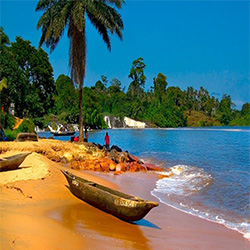

YAOUNDEYaoundé, souvent appelé Ongola en béti, langue de l'ethnie autochtone, la « ville aux sept collines », est la capitale politique du Cameroun. Peuplée de 4 100 000 habitants d'habitants en 20192, elle est, avec Douala, la ville la plus peuplée de cet État et de la zone CEMAC. La ville de Yaoundé s’étend sur 304 km2 dont une superficie urbanisée de 183 km25 et abrite une population estimée, en 2020, à 4 100 000 habitants, soit une densité moyenne de 13 486 habitants par km26 Chef-lieu de la Province du Centre et du département du Mfoundi (les limites administratives se confondant avec celles du département), Yaoundé abrite la plupart des institutions camerounaises les plus importantes. |
 |
DOUALADouala est la capitale économique et le principal centre d'affaires du Cameroun, en Afrique centrale. Peuplée de 3,7 millions d’habitants1,2, elle est l'une des deux plus grandes villes du pays avec la capitale politique Yaoundé. Site portuaire situé en bordure de l'océan Atlantique, au fond du golfe de Guinée, à l'embouchure du fleuve Wouri, Douala a le plus grand port du pays, et l'un des plus importants d'Afrique centrale. La ville s'étend sur les deux rives du fleuve. Depuis octobre 2017, un second pont s'étend sur le fleuve pour en relier les deux rives. La ville se développe à partir de son port de commerce sur l'estuaire du fleuve Wouri ouvert sur le golfe de Guinée. Chef-lieu de la région du Littoral et du département du Wouri, elle a le statut de communauté urbaine constituée de six communes d'arrondissement. |
|
KRIBILa ville est traversée par la route nationale 7 et la route provinciale P8 à 170 km à l'est du chef-lieu régional Ebolowa. Elle est à 180 km au sud de Douala, plus grande ville et plus important port du pays. La ville côtière de Kribi est située au bord du golfe de Guinée, au sud du Cameroun, dans le département de l'Océan dont elle est le chef-lieu, à l'embouchure des rivières Kienké et Lobé. La population urbaine s'accroît de plus de 7,5 % en 1976. Lors du recensement de 2005, Kribi Ier comptait 29 886 habitants et Kribi IIe 40 6796.Elle est un point stratégique du trafic maritime dans le Golfe de Guinée et le terminus de l'oléoduc transportant le pétrole brut depuis les champs pétrolifères de la région de Doba au sud-ouest du Tchad. Les chutes de la Lobé sont également à proximité de la ville (7 km) et il y a une route intérieure, à travers la forêt littorale, jusqu'à Lolodorf.Le tourisme dans le littoral de la province du Sud du Cameroun (Département de l’Océan) se développe depuis le bitumage de la route Edéa-Kribi en 1990 ; il est désormais l'un des principaux secteurs d'activité de la ville. |
 |